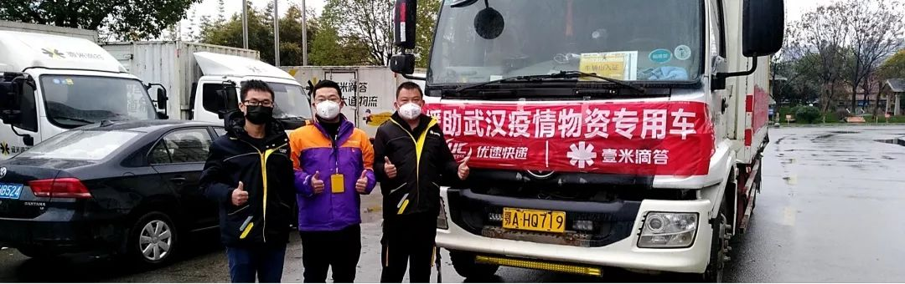
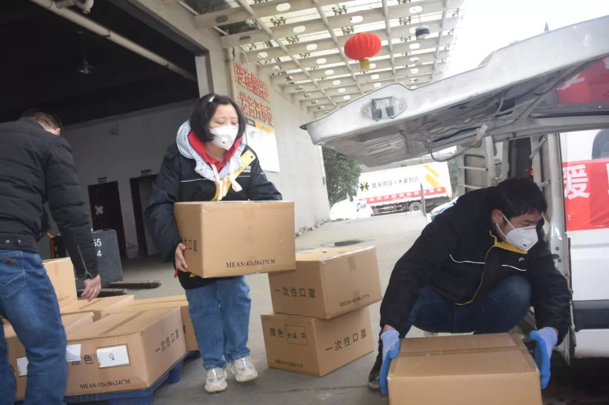

绿色通道、通行证、医院证明：医疗捐赠物资出入武汉记
原文链接 备份链接 ********** *****白天，肖昌文群里的400多名司机开始轮番拨打三位警官的电话，表达支援一线的想法、申请特别通行证。**********当天晚上，肖昌文终于拿到了两张“疫情防控特别通行 …


作者 | 罗松松 编辑 | 张庆宁
出品 | 棱镜·腾讯小满工作室
欢迎下载腾讯新闻APP，阅读更多优质资讯

尹雄平是壹米滴答公司驻武汉的一名货车司机，也是一名退伍军人。
1月25日一早，他和公司另一位司机黄明军从武汉分拨中心驱车赶往100多公里远的湖北仙桃。
两人等了12个小时，从当地一家工厂里拉到100万个口罩和200件防护服，次日凌晨四点送抵武汉。
1月26日上午，当尹雄平在休息时，壹米滴答湖北公司将这些这批医疗防护用品送到武汉协和医院、湖北省第三人民医院、武汉市中医医院、武汉市第三医院。
每家医院获得20万个救急口罩。
为这批医疗防护用品买单的是宁波当地企业，壹米滴答是运货方。
来自四面八方的医疗防护用品正源源不断涌向武汉及周边城市，武汉市物流协会紧急协调货车、司机。

壹米滴答公司为武汉各医院运送医疗物资

货车司机拉来四百箱口罩
25日早上8点多，壹米滴答的货车司机尹雄平和黄明军从武汉分拨中心出发。
路上他们碰到交警，因这次任务公司报备着急，没有拿到特别通行证。
两人把报备审批记录拿给交警，交警没有多问就放行了，最后不忘嘱咐一句：“你们必须两个人去，两个人回。
中午11点多，尹雄平到达仙桃市彭场镇一家工厂。
壹米嘀答的领导跟他俩说，等到晚上7点多才能拉到货，建议他们开一间房休息一下。
尹雄平知道自己是从武汉过去，“尽量别开了，别难为酒店的人。”
领导只好作罢，“你们委屈一下，在车上面先休息。”
两人随时待命，哪儿都不敢去。
下午两点多，尹雄平实在太饿了，刚好遇到优速快递的同事，想委托他们带一批口罩回武汉，就问他能不能绕个路，“去附近超市给我们带一点吃的。”
下午4点多，两人吃到一点东西。
口罩的需求量实在是太大了，这家仙桃工厂一直在赶工，还是凑不齐他俩的货。
两人从下午6点多又等到晚上9点多，之后又等了两个多小时，晚上11点多才开始装货，一直装到凌晨2点多。
清点货品完毕，尹雄平和同事拉着整整400多箱口罩回到武汉，彼时已经是凌晨四点，之后再由其他同事派送给了上述医院。
“有人事情就好办”
罗宽是尹雄平的领导，壹米滴答湖北省区办公室主任，这段时间他的工作主要是两件事。
第一是内部防控。
公司决定成立管理小组，针对湖北省的1200多名员工进行身体状况的摸排调查，尤其是排查其中一部分春节期间滞留武汉的员工。
对于有感染风险的员工，进行及时了解和跟进，除此之外对分拨中心按时消毒。
第二是物资运输。
罗宽等管理层发动该公司的武汉司机和管理人员参与到疫情防治和物资运输当中。
罗宽的电脑从早上一直开到晚上十一二点，微信群里不断有各种信息，太多事情需要他及时沟通。
壹米滴答在武汉共有20多号员工、30多辆货车，处于随时待命的战备状态。
“我们给他们准备了口罩，对车辆进行消毒，保障他们安全。”罗宽说。
1月26日上午，罗宽接到任务，火神山正在建立“小汤山”医院，正在赶工建设，需要建筑建材，“武汉市物流协会安排我们承接了一部分水电和线缆设备的运输工作。”
现在来看，全国支援武汉的医疗物资比较充足，社会零散资源正在逐步集结。
“物资运抵武汉之后，再及时运到县城和乡镇，需要更多的货车司机。”罗宽说，“有人事情就好办。”罗宽说，现在正好是春节，很多货车司机都在外地过年。
武汉物流协会紧急调配
怎么办？
1月23号武汉封城开始，武汉市物流协会陆续收到了一些公司的求助。
“春节期间，他们很多司机都放假了，大批货物想运往武汉，但没人，希望我们可以帮忙。”协会秘书长石君说。
武汉市物流协会随即建立两个微信群，一个是大车组，一个是小车组，大车主要负责运送大型医疗物资，小车（主要是私家车）负责接送医护人员下班，运输小件医疗物资和生活物资到医院和社区。
石君等人负责收集和梳理信息，并且进行车辆、司机进行调度。
有些外地物资如果进不了武汉市内，武汉市物流协会安排车辆在周边的高速路口进行交接，条件允许的，现场直接分拨派送，分拨不了的暂时拉到仓库之后再进行周转。
“我们主要负责点对点的运输，将医疗防护用品直接运到医院和社区，将建材运到正在赶工建设的火神山医院工地上。”石君说。
截至1月27日中午，武汉市物流协会集结的志愿货车车队合计承运口罩120余万只、防护服200余箱、保障食品饮料2000余箱、水暖建材100多立方，一定程度上缓解了武汉市防疫保障物资供需矛盾。
各路医疗支援物资还在源源不断进入武汉，但武汉市内以及武汉和周边城市之间的中短途运输存在缺口。
在武汉工作的货车司机多为外地人，其中一些愿意返回武汉驰援。
“有些人可能需要暂时在一家隔离一段时间，这是防范疫情需要。如果开着货车回到武汉，市内运输需接受一定管制。”石君说。
武汉市物流协会已经跟武汉交通部门反映过这些问题，“交通部门给了我们表格样式，让我们填入司机和车辆信息，好将他们统一调配回来。”
石君认为，这是比较可行的解决方案。


感谢您的阅读，欢迎在文后留言并点击“在看”，留言点赞第一名且60以上，获得一个月腾讯视频会员哦~ （截止时间：下周一下午18：00）

聚焦中国科技创新，书写深度商业故事
欢迎关注深网公众号，阅读更多优质原创内容。


扫码查看腾讯新闻客户端相关文章

本文版权归“腾讯新闻”所有，如需转载请在文后留言，经允许后方可转载，并在文首注明来源、作者及编辑，文末附上棱镜二维码。
第563期
实习运营编辑：陈诗雨 黄贺

点击“阅读原文”，查看腾讯新闻客户端相关独家文章！
你“在看”我吗？

原文链接 备份链接 ********** *****白天，肖昌文群里的400多名司机开始轮番拨打三位警官的电话，表达支援一线的想法、申请特别通行证。**********当天晚上，肖昌文终于拿到了两张“疫情防控特别通行 …
原文链接 备份链接 *************▲************* 大批量新国标标准的口罩正进入嘉兴“心脏仓” 。 （新华社/阿里巴巴供图/图） 全文共*4420*字，阅读大约需要*10*分钟。 “缺口以万为单位”，武汉市汉口医 …
原文链接 备份链接 以下文章来源于卖家 ，作者金斌 49岁的王慎才从未去过武汉，这是一趟完全陌生的旅程，前途未卜。他和这辆满载着口罩的蓝色大货车，将横穿安徽、江西两省，进入肺炎疫情的重灾区湖北，他的目的地是武汉的东西湖区卫生健康局，距离 …
原文链接 备份链接 他觉得自己像一个巨大的电插座，身上插满了孔，求助信息和资源提供信息被一起插到他身上，他再来牵线对接。 文 | 谢婵 李叙瑾 编辑 | 小豆 22岁的梅浩宇窝在出租屋里，吃光了13包泡面和3大袋零食，每天睁开眼睛，他就开 …
原文链接 备份链接 腊月二十九，我觉得再这样下去不行，得跟村长商量一下。 “村长，武汉肺炎都搞得‘封城’了，我们还有好多人聚众，要不要宣传……”话还没说完，听见电话那头，麻将粒儿磕得脆脆响。 陈家冲，一个平日里冷清得近乎空巢的农村，在今年 …